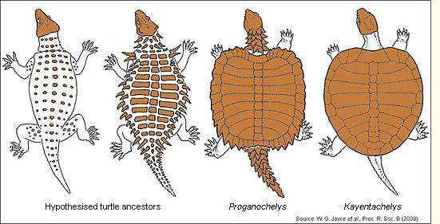

Sea Turtles
Turtles are fascinating creatures that have captured the imagination and interest of people worldwide. They belong to the reptile group Testudines, characterized by their protective bony shell. These remarkable creatures have roamed the Earth for over 200 million years, making them some of the oldest living reptiles.Turtles have a slow reproductive rate, with females laying relatively small clutches of eggs. Many species exhibit nest site fidelity, returning to the same beaches year after year to lay their eggs. However, turtles face numerous threats in today's world. Habitat destruction, pollution, climate change, and illegal wildlife trade have taken a toll on their populations.Turtles are reptiles that have a bone shell around their bodies. There are seven different varieties of turtles. They include the Loggerhead, Olive Ridley, Flatback, Green, Hawksbill, and Leatherback sea turtles as well as the Kemp's ridley tutles. Additionally, there are five different kinds of sea turtles that can be found in Sri Lanka: green sea turtles, loggerhead sea turtles, leatherback sea turtles, olive ridley sea turtles, and hawksbill sea turtles.

*Importance of turtles*
Turtles play a crucial role in maintaining the health and balance of ecosystems, making them of great importance. Firstly, turtles contribute to the regulation of aquatic ecosystems. As herbivores, they help control the growth of aquatic vegetation, preventing overgrowth and ensuring a healthy balance. Some turtle species are carnivorous, preying on invertebrates and small fish, helping to control their populations and maintain the stability of the food chain.
Furthermore, turtles serve as ecosystem engineers. For instance, freshwater turtles play a key role in nutrient cycling. They feed on decaying organic matter, such as dead plants and animals, and their digestion processes release essential nutrients back into the environment, promoting the growth of new life.
Turtles also aid in seed dispersal, as they often consume fruits and plants and then deposit the seeds in different locations through their excrement. This process contributes to plant diversity and the regeneration of habitats.
In addition to their ecological importance, turtles hold cultural and symbolic significance in many societies. They are revered as symbols of longevity, wisdom, and resilience. They feature in folklore, art, and traditional practices, reflecting their deep connection with human culture and history.
Unfortunately, turtles face numerous threats, such as habitat loss, pollution, climate change, and poaching. Many turtle species are endangered or critically endangered, making conservation efforts crucial.
Protecting turtles and their habitats is essential not only for the survival of these ancient creatures but also for maintaining the health and diversity of ecosystems. Conservation efforts involve establishing protected areas, implementing sustainable fishing practices, raising public awareness, and supporting research and breeding programs. By safeguarding turtles, we contribute to the preservation of our planet's natural heritage and ensure the sustainable functioning of ecosystems for future generations.

Evolution of Turtle
Turtles are unique reptiles with a remarkable evolutionary history. The earliest known turtles appeared over 200 million years ago during the late Triassic period. They evolved from reptilian ancestors with a shared lineage with dinosaurs and crocodiles. The distinguishing feature of turtles is their protective shell, which evolved as an adaptation to their environment.
The evolution of the turtle shell is a fascinating process. Initially, their ancestors developed broadened ribs and bony plates, which eventually fused to form a shell. Over time, the shell became more elaborate, enclosing the entire body and providing protection against predators.
Turtles have adapted to various habitats, ranging from freshwater lakes and rivers to oceans and even deserts. Their bodies have also undergone changes, such as modifications to their limbs, beak-like mouth, and specialized internal organs.
Despite their ancient origins, turtles have survived multiple mass extinctions and continue to thrive today. However, many turtle species face significant threats due to habitat destruction, pollution, and illegal trade.
Understanding the evolution of turtles helps us appreciate their unique features and adaptability. Studying their evolutionary journey provides valuable insights into the broader understanding of reptilian evolution and the complex history of life on Earth.